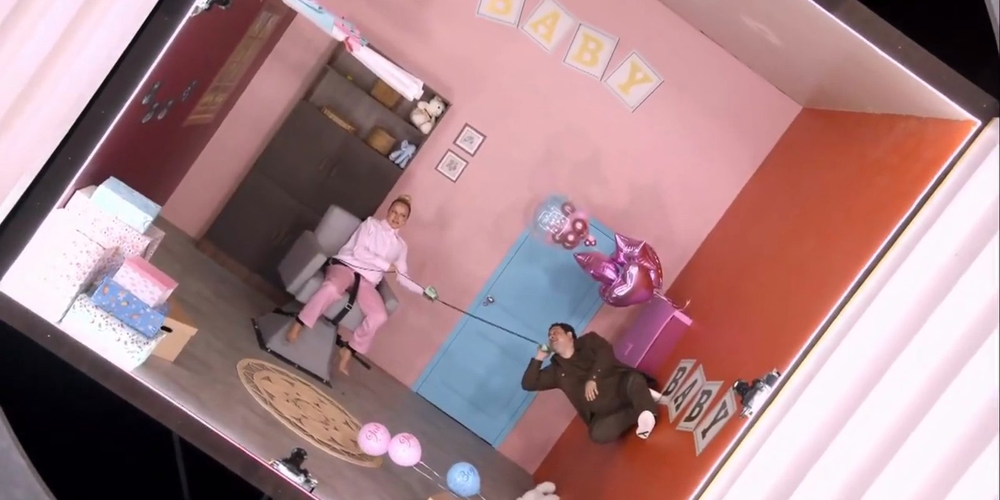

03 · Processo
Cada objeto chega em dois arquivos: a foto e a faca.
Tacho e frigideira vão para a gráfica como foto recortada e como silhueta em magenta, com o tamanho no nome do arquivo (panela3_faca_32cm). A silhueta é a faca: mostra onde cortar.


Case 20 · Design gráfico de cena · TV
Invertidamente é um quadro do Em Família com Eliana, na TV Globo, que estreou em 26 de julho de 2026. Os cômodos ficam dentro de uma caixa que gira, e muito do que seria objeto solto chega como foto recortada, com a medida no nome do arquivo e uma faca de corte em magenta.

01 · No ar
Os convidados entram num cômodo montado dentro de uma caixa que gira até ficar de cabeça para baixo. Tudo o que está na parede gira junto com a sala.
02 · Peças
Lousas de giz, sacos de kraft, pôsteres de academia, plano de vacinação do pet, passagem e etiqueta de bagagem. Filtre por cômodo e clique para ampliar.
03 · Processo
Tacho e frigideira vão para a gráfica como foto recortada e como silhueta em magenta, com o tamanho no nome do arquivo (panela3_faca_32cm). A silhueta é a faca: mostra onde cortar.